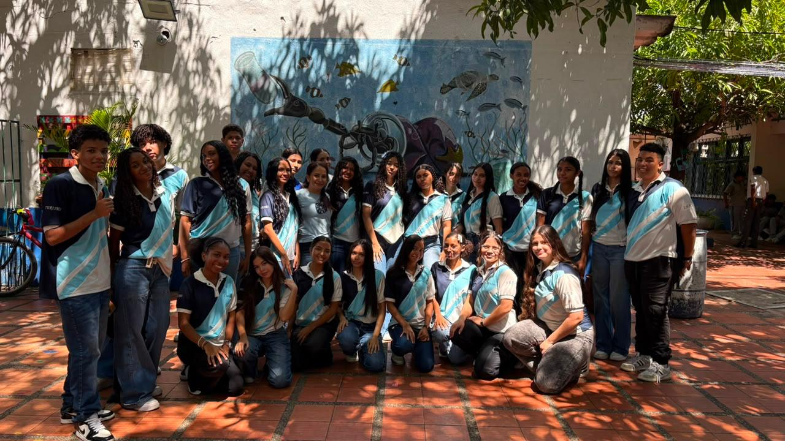
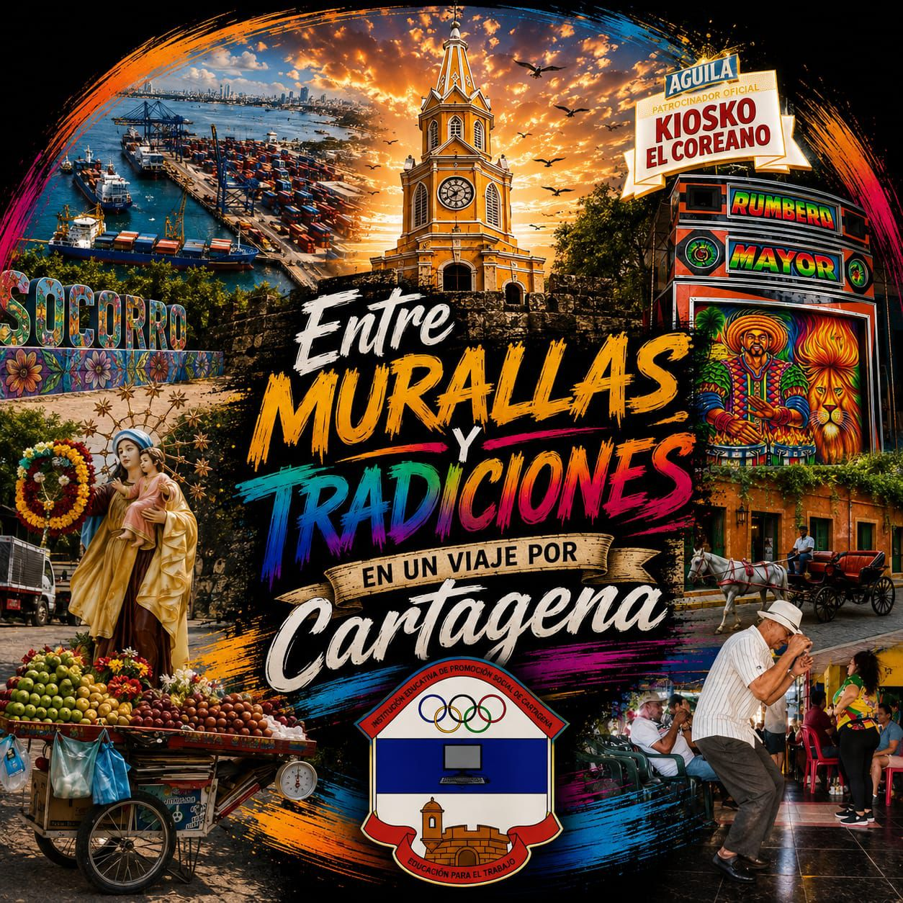
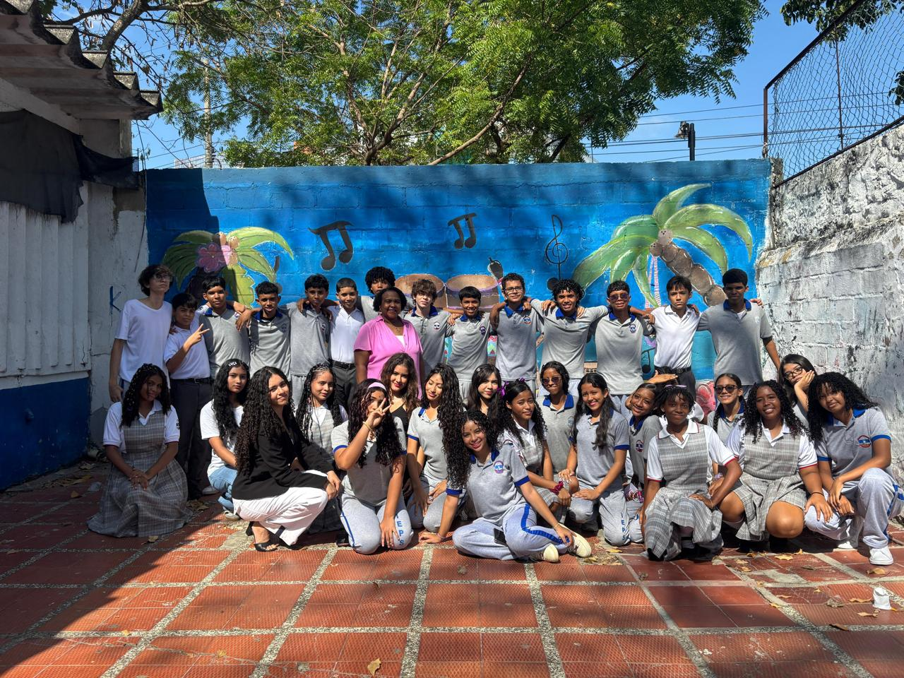
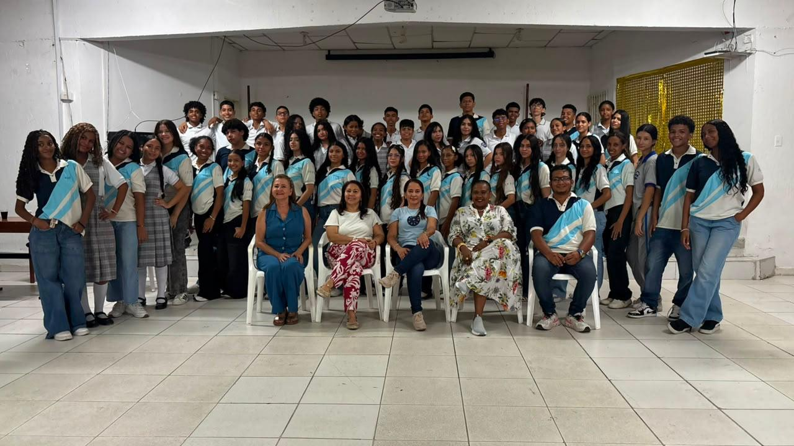

Lanzamiento del Festival del Patrimonio
Pequeña muestra de lo que se realizará durante el festival.
Martes 15 de septiembreActualidad escolar
Encuentra aquí actividades, programas y novedades importantes para nuestra comunidad educativa.

Próximo evento

Una experiencia cultural que recorre la memoria, los sabores, los sonidos y las tradiciones de Cartagena.
Pequeña muestra de lo que se realizará durante el festival.
Martes 15 de septiembre“Entre murallas y tradiciones: un viaje por Cartagena”.
18 de septiembreBaile y demás actividades culturales registradas.
2 de octubreFestival del Patrimonio
“Buscando la historia entre las cenizas del pasado”.
Fechas tomadas de la secuencia general del plan de actividades entregado por la institución.
Noticias

Docentes y estudiantes unen capacidades para sacar adelante proyectos que dejan huella.
La formación técnica abre oportunidades para continuar aprendiendo y aportar al entorno.

Cada logro nace del compromiso conjunto de estudiantes, familias, docentes y directivos.
Comparte la agenda
Guárdalo o compártelo para consultar las próximas actualizaciones.